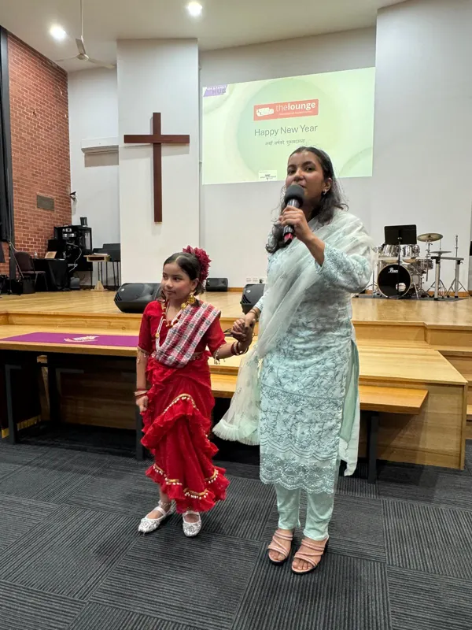
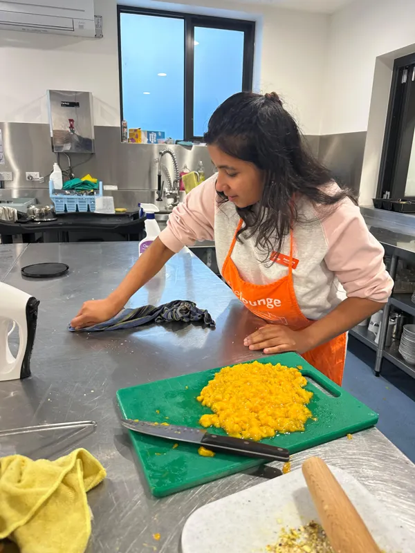
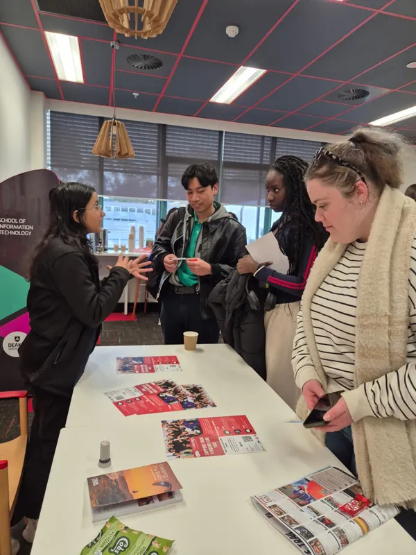
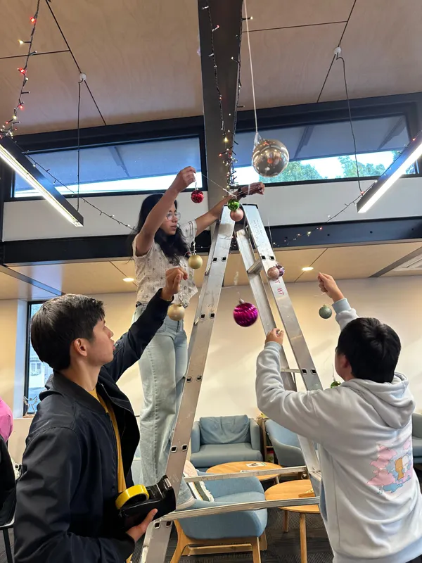
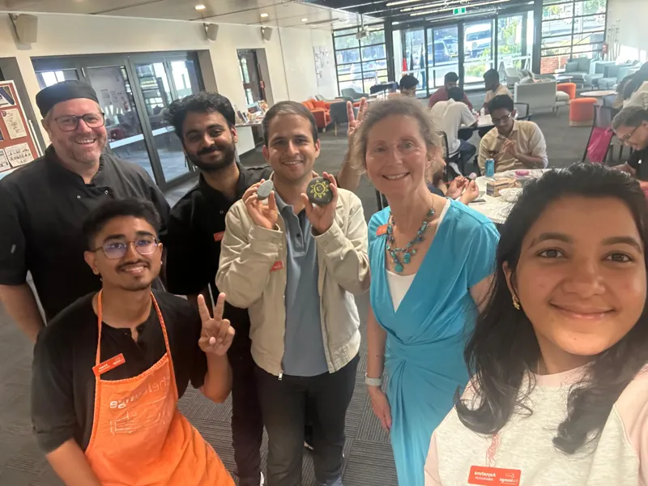
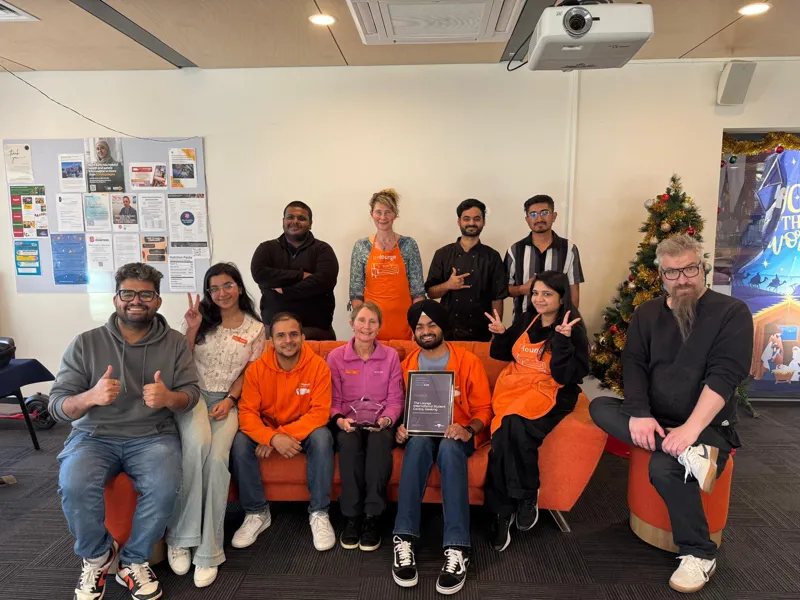
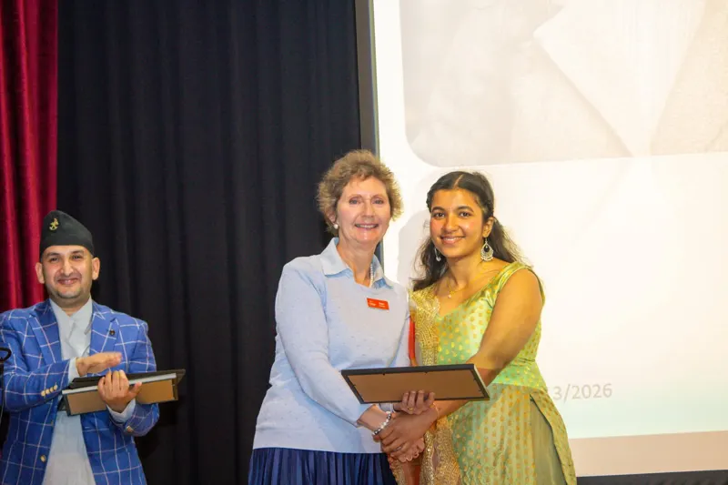

About me
I’m an AI and data engineer and researcher based in Sydney. I build practical systems across machine learning, computer vision, geospatial data, and LLM applications. I enjoy taking a problem from the data and early design through to a working tool that people can use.
I bring three years of computer vision and research engineering experience from South Korea, followed by applied AI and data engineering work in Australia. My recent work includes large-scale geological data pipelines, machine learning models, agentic workflows, and API-based applications. At Deakin University, I completed a fully funded Master of Information Technology by Research and published research at WACV and ECML PKDD. I received the Women in AI Australia and APAC award in the AI in Mining category.
Outside the lab
A few stories from volunteering, hosting and mentoring in Nepal and Geelong. Open any card to read more.
A mic and a New YearThe Lounge · Geelong
I planned and hosted a Nepali New Year celebration for international students and their families, from sorting out the food to taking the mic as we welcomed 2083 Bikram Sambat.

Around the tableThe Lounge · Geelong
Some weeks I cooked community meals, decorated the centre for Christmas or joined in on craft days. I also helped new international students find their feet at Deakin orientation.





Launch night in GeelongNepali Pathshala Geelong
I helped organise the official launch of Nepali Pathshala Geelong and took the mic as MC. I worked on the run sheet and helped keep the evening moving.

Early steps in STEMSmart Cheli · Girls in Physics
I mentored students through Smart Cheli in Nepal. At the Girls in Physics Breakfast at Deakin, I shared how I found my way into STEM and answered students’ questions about where it could take them.
What i'm doing
-

AI and Machine Learning
I build and evaluate machine learning and computer vision systems, from model development to usable applications.
-
Data Engineering
I create reliable Python and SQL pipelines for large, complex and geospatial datasets.
-
LLM and Agent Workflows
I build LLM and agent workflows, including retrieval-augmented generation, integrations and business process automation.
-
Research and Delivery
I connect research with practical delivery through evaluation, deployment, documentation and communication.